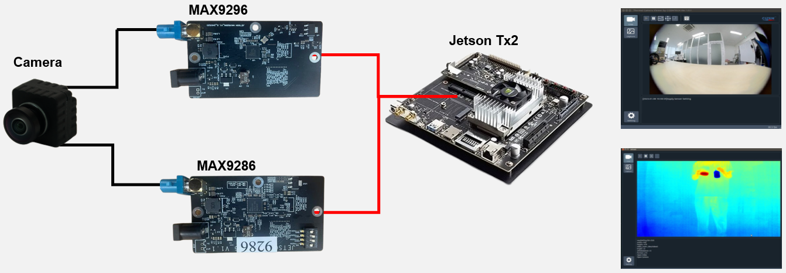
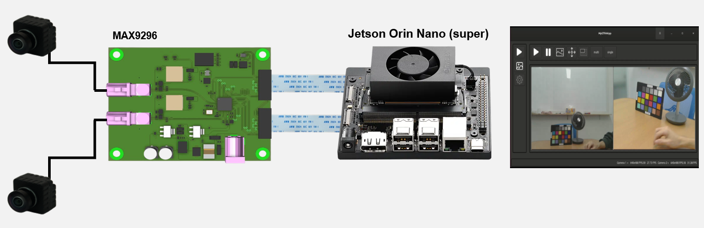

On this page
NVIDIA Jetson Platform
Jetson TX2 / Xavier
Jetson TX2 / Xavier Deserialize Board is the deserialize board to NVIDIA GPU for small companies or developers.
It’s support to MAX9296A and MAX9286 deserialize images.

Jetson Orin Series
Jetson Orin Deserialize Board is the deserialize board to Orin GPU for small companies or developers (Windows & Linux).
It’s support to MAXIM 9296 deserialize images.

Need help? Troubleshooting · Contact technical support